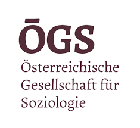
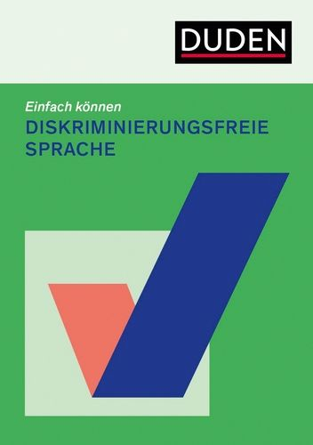

Sozialphänomenologische Annäherung an das Politische:
mit Alfred Schütz und Hannah Arendt
Ein Vortrag von
Georg Harfensteller

Abortion is Healthcare

Disk.freie Sprache
No False Borders
## Methodische Selbstverortung Sozialphäno. der Deutungshoheit - doppelte Gefahr I) In eidetischen Variation ähnliche Problemstellung (Grenzen des Politischen) → Teil des Diskurses (¬ Soziologie) II) In Systematisierung der Machtverhältnisse wird Erlebnis der Akteur:innen thematisch vorbestimmt.</br> (¬ deskriptive Phänomenologie) --- ### *critical phenomenology* - Gesellschaftskritisch -> Diskursbeteiligung gewollt! - wird Erlebnis subalterner/aktivistischer Personen gerecht → Arbeitsmaterial, aber keine methodische Fundierung --- ### Politische Phänomenologie - Politische Differenz (Erlebnis → Staatsführung) "Das Politische bezeichnet gerade die Störungen, Unterbrechungen und Umwälzungen des Normalbetriebs der Politik." <!-- .element: class="cite" --> (Vgl. Bedorf und Herrmann - [Phänomenologie des Politischen](https://www.fernuni-hagen.de/philosophie/lg3/forschung/phaenomenologie-des-politischen.shtml)) <!-- .element: class="citing" --> - eid. Reduktion: Macht und Institution <br>→ *erklärt* Situationen, bevor sie Erlebnisse *beschreibt* --- **Sozialphänomenologie des Politischen** Das Politische erklärt sich in der *Funktion* für den Alltag sozialer Akteur:innen als *sinngebende Schlussinstanz*. (Vgl. Srubar, *Kosmion*, S. 247) <!-- .element: class="citing" -->
Inhalt
Grenzen der allt. Lebenswelt
Politische als
Vollzug der Pluralität
Probl. Situationen und das Politische
Fallbeispiel: Disk.freie Sprache
## Lebenswelt <!-- .slide: data-name="Lebenswelt" data-auto-animate --> Das Politische als *Sinnprovinz* → Einstellung, Weisen des Verhaltens und Wissen (Vgl. Wissenschaft, Religiösität, Phantasie, Kunst, Sport etc.) Kulturelle Genese, Veränderung und Erhalt von Sinnprovinzen gründet in der Rolle für soziale Akteur:innen → Notwendigkeit ihrer Praxis im Ausgang vom Alltag --- <!-- .slide: data-auto-animate --> ## Lebenswelt "Nur in der alltäglichen Lebenswelt kann sich eine gemeinsame kommunikative Umwelt konstituieren. Die Lebenswelt des Alltags ist folglich die vornehmliche und ausgezeichnete Wirklichkeit des Menschen." <!-- .element: class="cite" --> (Schütz und Lickmann, *Strukturen der Lebenswelt (SdL)*, S. 29) <!-- .element: class="citing" --> → Natürliche Einstellung des Alltags markiert Grenzen der Praxis und Möglichkeiten der Sinnprovinzen --- <!-- .slide: data-auto-animate-restart data-auto-animate --> ## Natürliche Einstellung - Suspendierung des Zweifels, ob Welt, Menschen und Objekte existieren → *Epoché* des Alltags (*SdL*, S. 59) - Intersub. Teilhabe und Entsprechung der Natur-, Sozial- und Kulturwelt (*SdL*, S. 31) - Planhierarchie des *first things first* (*SdL*, S. 85) --- <!-- .slide: data-auto-animate --> ## Natürliche Einstellung "Das wirkende Selbst, das in lebendiger Gegenwart in seinen ablaufenden Handlungen lebt und auf die zu verwirklichenden Ziele und Gegenstände ausgerichtet ist, erfährt sich als Urheber des ablaufenden Handelns und somit als ungeteiltes, ganzes Selbst." <!-- .element: class="cite" --> (Schütz, engl: *On multiple Realities* S. 540, deutsch: *Über die mannigfaltigen Wirklichkeiten*, in Gesammelte Aufsätze I., S. 247) <!-- .element: class="citing" --> --- <!-- .slide: data-auto-animate --> ## Natürliche Einstellung "Wir können sagen, daß unsere natürliche Einstellung der Welt des täglichen Lebens gegenüber durchgehend vom pragmatischen Motiv bestimmt ist." <!-- .element: class="cite" --> (Schütz und Luckmann, *SdL*, S. 33) <!-- .element: class="citing" --> Von kult. Weltbildern überformt! (Vgl. *SdL*, S.219) Funkt. These: Konkrete (politische) Sinnprovinzen bewältigen Situationen, die in alltäglicher Einstellung unbewältigt bleiben. --- ## Das Politische <!-- .slide: data-name="Das Politische" --> Warum Hannah Arendts *Vollzug der Pluralität*? - *Vita Activa* (VA) als politische Anthropologie → vorinstitutionelle Analyse von Praxis (Arbeiten, Herstellen, Sprechen und Handeln) - Sophie Loidolts "Phenomenology of Plurality" erm. phänomenologische Interpretation - Lebensweltbezug im "Bezugsgewebe menschlicher Angelegenheiten" --- <!-- .slide: data-auto-animate --> ## Vollzug der Pluralität Ausgangspunkt ist eine Einstellung, in der aufgrund von Freiheit etwas Neues angefangen werden kann. "So artikuliert sich bei Plato die Doppeldeutigkeit des Wortes άρχή (arché) in dem Satz: Zur Herrschaft berechtigt ist, *was Anfang ist*. (...) Mit diesem Verlust (GH: Untergang der antiken Welt) verlor die Tradition politischen Denkens die elementarste und ursprünglichste Erfahrung des gewaltigen *Vermögens menschlicher Freiheit*." <!-- .element: class="cite" --> (Hervorhebung G.H., Arendt, *VA*, S. 219) <!-- .element: class="citing" --> --- <!-- .slide: data-auto-animate --> ## Vollzug der Pluralität Platon: *Vermögen der Freiheit* Anlehnung an leitende Funktion der Hausherrin. Bloß allt.-prag. *Tun* **VS** *Wissen*, was zu tun ist Wissen und Freiheit dann, wenn "das Handeln a priori aus dem Verlauf der menschlichen Angelegenheiten" ausgeschaltet ist. (*VA*, S. 218) --- <!-- .slide: data-auto-animate --> ## Vollzug der Pluralität **Kritik**: Subalternes Leben (Sklaven, Frauen) und identitätspolitische Positionen ausgeschlossen. Kritik verkennt Charakter des Analogiearguments! Bsp.: "Platonische Utopie", sodass alle Bürger:innen der Polis sich als "Glieder einer Familie fühlen und verhalten könnten." (*VA*, S. 218) --- <!-- .slide: data-auto-animate --> ## Vollzug der Pluralität **Sozialphänomenologische Alternative**: Das Politische als Begegnungsraum (des *Sprechens und Handelns*), indem gemeinsam das Vermögen der Freiheit und das Wissen, was zu tun ist, im Wohle der Gemeinschaft angewandt werden. --- ### Politische Epoché / Erkenntnisstil: - Pers. Situat. einklammern (¬vergessen! → Freiheit) - In Öffentlichkeit mit Blick auf Zusammenleben (*Bezugsgewebe menschlicher Angelegenheiten*) - Wissensaustausch (Sprechen) und "Neues Anfangen" (Handeln) Beschreibt Politik, aber was mit *Selbstverständnis* politischer Akteur:innen um Deutungshoheit? --- **Auslöser für Wechsel in politische Einstellung?** In Harfensteller, *Rissen im Bezugsgewebe* Umstände zur Gruppenkonstitution nah an Arendt. Für **Sektion Soziologische Theorie**: Übergang allt. zur pol. Einstellung --- <!-- .slide: data-auto-animate --> ## Problematische Situation <!-- .slide: data-name="Probl. Situation" --> Neuen Sinnauslegung, wenn pragmatische Motive des Alltag gestört/ unterbrochen. (*SdL*, S. 84f.) Erlebter Widerstand → **Neues Anfangen müssen!** Unterbrechungen ohne Sinnauslegung: Rückkehr zu prag. Motive der Planerfüllung (*first things first*). --- <!-- .slide: data-auto-animate --> ## Problematische Situation Bestehendem Wissen: Kult. und biogr. Horizont **Hinreichender pol. Widerstand:** 3a) Eigene oder fremde allt. Praxis 3b) Grund in illegitimer Generalisierung 3c) in Koordination (S&H) gemeinsam und bewältigt --- ### Alltägliche Praxis Ausgangspunkt: Allt. Widerstand → Unterbrechung eigene/ fremde Praxis Fremde Praxis?: Selbstverständliche Entsprechung der Natur-, Sozial- und Kulturwelt (inkl. Hierarchie/ Aufteilung) + ... <!-- .element: class="fragment" --> --- ### Illegitime Generalisierung Widerstand aufgrund Gemeinsamkeit mit Anderen → Komp. Bewältigung in *Einzigartigkeit* der Pluralität! Übergang! → Politisierung der Situation als freie persönliche Entscheidung erfahren → erste performative Bewältigung --- **Bsp: Rassistisch/ sexistischer Blick** → Reduktion ethnische/ sexuelle Lesbarkeit in *davon unabhängigen Praxis*. Weltbild bestimmt Legitimität der Einschränkung von Praxis, zeigt sich an typischen/ vertraute oder untypische/ fremde Berufe, Kleidung, Verhalten wie Mitsprache/ Initiative etc. --- ### Illegitime Generalisierung Brauch es gemeinsame problematische Erfahrung? Illegitime Generalisierung ausschlaggebend! <!-- .element: class="fragment" --> Gemeinsamkeit (Gleicher Ort im Bezugsgewebe) erst in pol. Einstellung. <!-- .element: class="fragment" --> --- <!-- .slide: data-auto-animate --> ### Koordination - Status der Gemeinsamkeit? Erlebnis illegitimer Generalisierung → pol. Sprechen und Handeln → *Gemeinsame* Sinnbildung lebensweltlicher Abhängigkeit/ Widerstände → *Koordinierter* Kampf um Veränderung/ Anerkennung (oder Deutungshoheit?!) → Welt als sinnhaft gemeinsame --- <!-- .slide: data-auto-animate --> ### Koordination - Status der Gemeinsamkeit? Nicht Lösung des Problems, sondern Praxis zur Umgänglichkeit der Situation. Probl. Situation bekommt "Vorzeichen" → pol. Sinn wird angewandt Im Diskurs um **Deutungshoheit** unterschiedliche Dinge mit pol. Vorzeichen --- <!-- .slide: data-auto-animate-restart data-auto-animate --> ## Anwendung Disk.freie Sprache <!-- .slide: data-name="Disk.freie Sprache" --> "Die einzige rein materielle, unerläßliche Vorbedingung der Machterzeugung ist das menschliche Zusammen selbst. (...) Die Grenze der Macht liegt nicht in ihr selbst, sondern in der gleichzeitigen Existenz anderer Machtgruppen, also in dem Vorhandensein Anderer, die außerhalb des eigenen Machtbereichs stehen und selbst Macht entwickeln. Diese Begrenztheit der Macht durch Pluralität ist nicht zufällig, weil ihre Grundvoraussetzung ja von vornherein eben diese Pluralität ist." <!-- .element: class="cite" --> (Arendt, *VA*, S. 195) <!-- .element: class="citing" --> --- <!-- .slide: data-auto-animate --> ## Anwendung Disk.freie Sprache Diskr.freie Sprache analog zum rass./sex. Blick *"Schutz" der Sprache:* Widerstand als erlebte Grenzen der Macht → Essenzialisierung, Totalisierung oder Kommodifizierung (eigenen pol.) Praxis und Wissen → Politik der *Entpolitisierung* --- <!-- .slide: data-auto-animate --> ## Anwendung Disk.freie Sprache <div style="font-size:30px"> | | "Schutz" der Sprache | Diskrim.freie Sprache | | - | - | - | | prob. Praxis | Normative Kritik an Sprachgebrauch | Sprachliche Gewalt | | Illeg. General. | Herausheben aus Status Quo → Segregation | Rassistische, sexistische und ableistische Objektivierung/ Ausgrenzung | | Koord. Bew. | Machtkonsolidierung → Konservierung Status Quo | Rücksichtnahme/Kritik als politische Praxis | </div>
Vielen Dank für die Aufmerksamkeit
https://griznuke.github.io/sozphaen_politisch